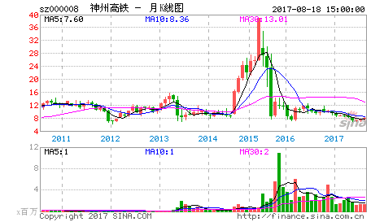
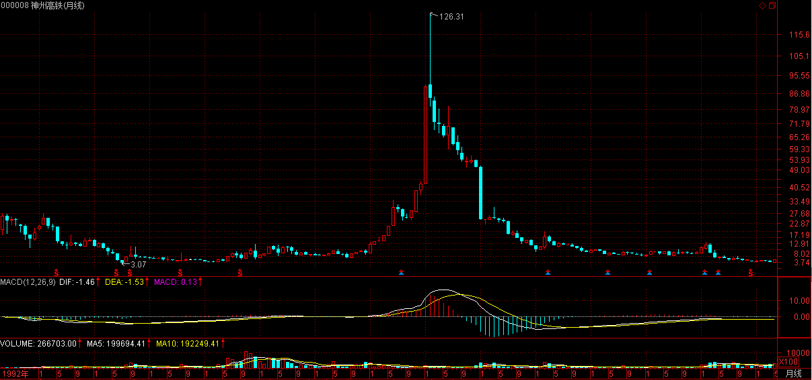
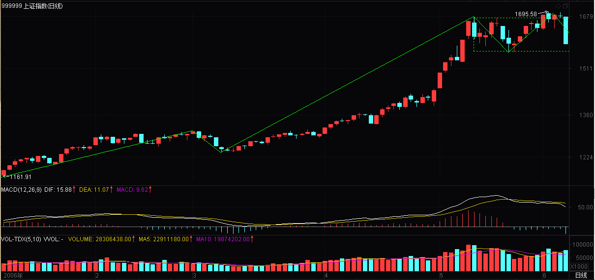
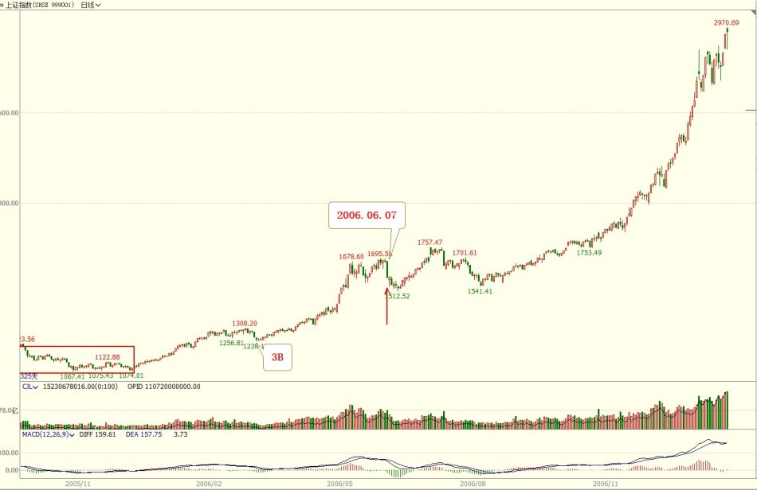
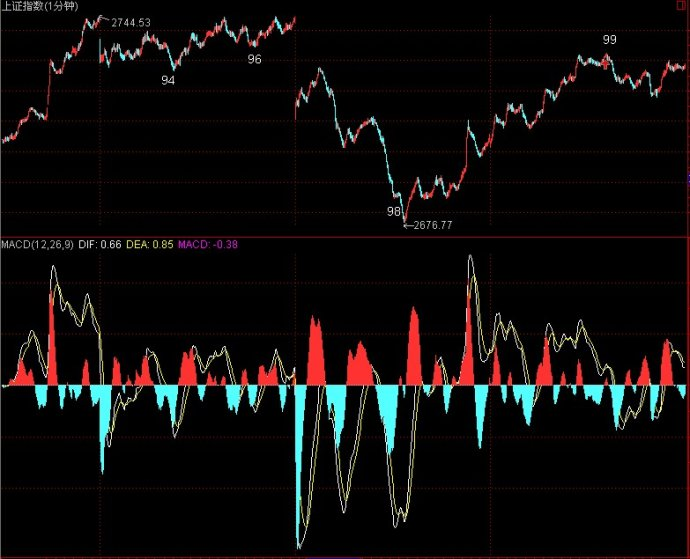

(2006-06-07 22:41:27)

教你炒股票2：没有庄家，有的只是赢家和输家！
【韶山映山红】原文配图是SZ000008宝利来的月K线图，现在叫神州高铁，最妖孽的时候叫亿安科技，网上有传说缠中说禅就是当年亿安科技的两个操盘手之一的李彪。新浪博客自动更新为当下的新图，这里贴上当时的月Ｋ线图。】

【韶山映山红】2006-06-07星期三。18:08:15第一课，22:41:27第二课。】
【韶山映山红】本文发表的当日，低开、收阴，-5.33%，是998转折以来的最大跌幅。】

【韶山映山红】桃花博客配图。】

庄家这种动物对大多数人来说很神秘，对本ID来说就太稀松平常了。【韶山映山红】扫地僧：现在依然神秘，因为迎合阴谋论的思维】庄家和散户这种二元对立，大概比较适合现代中国人的思维模式，因此就变得如此的常识，但常识往往就是共同谬误的同义词，不仅是所谓的散户，而且很多的所谓庄家，也就牺牲其中。【韶山映山红】常识，普通知识。一般人所应具备且能了解的知识。因浅显而普及，也因浅显而多谬误。】
【韶山映山红】桃花注：市场是合力的结果，并非庄家和散户的二元对立关系。】
【韶山映山红】静姐02-01】
【韶山映山红】若禅精舍（陈秋明）注： 阴阳二元对立模型，在中国传统哲学里，属于高度归纳总结的原理。但这里指的是无法辩证看待一件事物的思维方式，眼睛看到的，只有非黑即白的两端，类似的还有佛教里的一因一果、故事里的好人与坏人，而事实上，没有任何一个结果，是纯粹的一个因而导致的，所有事物的发展，都是合力的结果。 】
一般定义中的所谓庄家，就是那些拿着大量资金，能控制股票走势的人。在有关庄家的神话中，庄家被描述成无所不能的，既能超越技术指标、更能超越基本面，大势大盘就更不在话下了。这里说的还只是个股的庄家，至于国家级的庄家，更成了所谓散户的上帝。关于这些庄家上帝的传闻在市场中一秒钟都不曾消停，构成了常识的谬误流播。【韶山映山红】大资金不能随心所欲地控制股票走势，不能改变走势的结构，但是可以改造股性。关于股性，后面的课文多处提到。★可以做个专题，以后研究。】
【韶山映山红】扫地僧：直到现在，郭嘉队依然还是坊间的谈资。】
【韶山映山红】桃花：庄家不是万能的，也要顺应技术面和基本面。顺应大势大盘，一只股票或一波行情的启动，需要大势的配合，大势不好，庄家自身也难保安全，因此要谨慎入市。】
【韶山映山红】静姐02-02】
【韶山映山红】若禅精舍（陈秋明）注：找一棵大树好乘凉，是中国人的习惯思维，也因此绝大多数人终其一生都在低级别中枢震荡，而没有突破的一天。市场上充斥着无数解读庄家操盘思路的教材，也有意无意的培养出无数以寻找庄家拉升点的操作者，这种心理，和找大树并没有什么本质的不同。】
但所谓的庄家，前赴后继，尸骨早堆成了山。前几天在一个私人聚会里，还碰到一个50年代的老大叔，说已经准备了二十亿，要坐庄，让本ID去联系一下某某公司的头。那人也是有头有脸的人了，不想当众奚落他，暗地里把他嘲笑了一番，简直是脑子锈着了。【韶山映山红】扫地僧：这种人不在少数，因为他们往往在某个领域比较成功，其控制欲都会很强，都非常享受主宰一切的那种上帝的感觉，所以都会很想做坐庄的事情。】
【韶山映山红】静姐02-03】
当然，即使庄家的神话已经如此常识，这种傻人还是一直、也会继续前赴后继的。而正因为这种傻人如此的多，猎人打起猎来才能收获丰富。看到越摆庄家谱的，猎人就越高兴，反正这类型的，基本在市场上混个几年就基本尸骨无存了。【韶山映山红】对市场要有敬畏之心。“摆庄家谱的”，贪嗔痴疑慢的慢。】
【韶山映山红】静姐02-04】
【韶山映山红】扫地僧：尤其是近两年监管越来越严，证监会几乎每周都要处理一批所谓的庄家、大鳄，连徐翔这种神话都沦为了阶下囚。前一段时间顶格处罚的那个唐汉博，一下罚了12亿，以后这些所谓的庄家主力会被时代所淘汰。】
市场没有什么庄家，有的只是赢家和输家！【韶山映山红】扫地僧：上一节课里已经表达了输赢是市场里的唯一标准，什么庄家啊主力啊，能赚到钱才是赢家】
有的只是各种类型的动物，【韶山映山红】扫地僧：代表着就是各种级别的市场参与者】还有极少数的高明猎手。【韶山映山红】扫地僧：代表着市场中的明白人】
【韶山映山红】市场就是黑暗森林。《三体》宇宙社会学基本公理：1、生存是文明的第一需要。2、文明不断增长和扩张，但宇宙中的物质总量基本保持不变。】
【韶山映山红】桃花：（猎人要有严明的纪律和思想）】
【韶山映山红】静姐02-05】
市场就是一个围猎的游戏，当你只有一把小弓箭，你可以去打野兔；当你有了屠龙刀，抓几条蛇来玩当然就没劲了，关键你是否有屠龙刀！【韶山映山红】屠龙刀，金庸小说中的第一宝刀，“武林至尊，宝刀屠龙，号令天下，莫敢不从！倚天不出，谁与争锋？”衡量“高明猎手”的等级，看的不是资金量，而是兵器谱。不要关注虚无的庄家，要修炼自己的“小弓箭”，直到“屠龙刀”。】
【韶山映山红】桃花注：（精湛的技术，严格的执行力及合理的资金管理）】
【韶山映山红】静姐02-06】
【韶山映山红】扫地僧：小弓箭和屠龙刀代表着不同的能力，你的猎物是什么不重要，重要的是是否有抓住猎物的本领】
【韶山映山红】本文讨论的并不是庄家的有无。事实上，缠师是承认庄家的客观存在的。只不过，对我们炒股而已，庄家的话题没有意义。或者说，跟庄之类的操作，没有意义。后面缠师在问答里明确的说过：在本ID这里小学毕业，对比外面的人已经很厉害了。……到了硕士，可以开些专门的班，例如怎么坐庄，还有如何阻击庄家等等。】
【韶山映山红】静姐02-07】
（待续）
【韶山映山红】
如果我们希望在市场交易中获利，首先便放弃我们可以影响行情的想法。我们的唯一选择是追随行情，而且必须确定我们追随的是行情的驱动者。
我说“谁在主导这场戏”时，我是指那些交易量最大的交易者。知道他们的确实身份并不重要。了解他们的行动——大量买进或卖出——则至为重要。
《证券混沌操作法：低风险获利指南》】
【韶山映山红】若禅精舍（陈秋明）：
作者的经历，是写下这篇文章那个当下的底蕴。而事实上，任何人的经历都是无法复制的。猎手，我们经常把金融界的某些牛人，称之为金融大鳄，鳄鱼当然是捕猎的高手，装死能力一流，出口迅捷无比，吃一次管好久。股票的操作也是同样的，耐心等待你的买点出现，否则就装死不要动！
】
【韶山映山红】亿安科技作手：
缠中说禅教你炒股票系列批注（2） (2011-06-04 08:12:22)
本课全局性批注：
资本市场中从来没有所谓的庄家和散户对立，如果有，那只不过是以一种荒谬的想法存在于大部分个体投资者的意识中，这个市场过去、现在和以后存在过、存在着的唯一一种对立就是赢家和输家的对立，缠君在本文第一段承接了第一课尾部的观点。
股市中有N种理论，但有一种理论是不必耗费大量精力研究的，就是所谓的跟庄理论，既然庄家的尸骨堆积如山，那所谓的跟庄的人的尸骨估计都堆积如喜马拉雅山了，在市场中，任何分力只不过是分力，把分力当合力是荒谬的，选择跟随、研究某分力可能一时战胜市场，但妄图长久的在市场中取得成功是不现实的。
有钱就能当庄又是一个经典的谬误，仅仅靠和上市公司弄点阳谋阴谋更干不了这事了，有机会不成为尸骨的庄家的三个前提条件是：1、有一定资金规模 2、可以在一定时间段内将筹码成本降低到零 3、资金能长期坚持。
本课摘句批注：
在有关庄家的神话中，庄家被描述成无所不能的，既能超越技术指标、更能超越基本面，大势大盘就更不在话下了：所谓的庄家时代的巅峰应该是在2000年那会儿了，那时候的庄都不是以个股的庄家形式存在，而是N只个股组成一个组合，以XX系存在，最后有几个可以独善其身的？庄家如果真的是无所不能的上帝，连自己的命运都掌握不了，算哪门子上帝？想当年，根本不认识的股民为那两兄弟写诗的都有了，最后还弄的口口相传，想想也真有意思，那估计是庄家时代的巅峰了，巅峰的命运尚且如此，何况后来那些出来瞎蹦跶的后辈了。07年公募基金多牛啊，当然因为法规的限制，他们只能采用进场-锁仓-拉同伙的方式弄，这不过就是把坐庄联合化了的一种手法罢了，最后一场6124-1664，一切归零，最可怜的当然不是基金那帮家伙，而是那些“基民”。现在，所谓的庄又改头换面了一把被产业资本们把控，股改之后大量非流通筹码可流通造就了当下的，实体家成为庄家，也够有意思的。研究庄不是没有用，是没多大的用，时代在发展，资本市场的模式也不会停滞不前，红极一时的庄家们，大都在最巅峰的时候大厦倾覆，想想2000年附近的德隆系、中科系，6124点时候的基金，概莫如此。
市场没有什么庄家，有的只是赢家和输家！有的只是各种类型的动物，还有极少数的高明猎手。市场就是一个围猎的游戏，当你只有一把小弓箭，你可以去打野兔；当你有了屠龙刀，抓几条蛇来玩当然就没劲了，关键你是否有屠龙刀：这也是本ID经常说的，对大多数人来说，当你只有一把小弓箭的时候，就别老贪心到要把市场里的每分钱，每个波段都吃到，就像用一分钟级别操作，那意味着在大部分软件系统里已经进入最低级别阶段，市场中的所谓的风吹草动制造的波段差价机会都可以进入该级别并监控了，没有高明的技巧在一分钟里折腾除了加速死亡外，本ID想不到其它的可能。当然对有能力的人来说，市场中每个波动都会给你制造抽血的机会，控制好买卖的数量，各个级别不过是提供了各种速度的卷钱机器而已，资金搞大了，就把所有级别都开着，控制好每个级别可承载的成交量，你能监控多少个级别，就有了多少个卷钱机器。永远记住两句话：干你该干的事情，干你能干的事情。】
【韶山映山红】南无月光如来：
有些人看了该文，产生了一种误解，认为缠师否认市场上存在庄家，其实不然。缠师说的意思已经很明了了，就是不管是庄家和散户，并不必然会成为赢家和输家，庄家不顺着市场合力而行，庄家也会输，散户有了屠龙刀，也会战无不胜。在新中国短短的证券史上，那些长庄在资金链断裂后股价大跳水的还少么？输多输少是以百分比为依据的，那些所谓的庄家有时比散户死得还惨。
当然随着证券市场的发展与规范，那种所谓庄家坐庄的时代已经不复存在了，有的只是市场主力之间的合作或博弈。作为市场散户，你的分力的参与，也会影响市场波动的。只是你的力量相对较小，分力大的决定了市场的方向而已。
那么人们常说的国家大主力有没有呢？个人认为在特殊情况下是存在的，但他们不会长时间操控股市，而是在宏观上引导股市。如：前年汇金的入市；还有在小平同志逝世的第二天，神秘力量介入了四川长虹，影响当时的权重股，稳定股市，过了几天，四川长虹又成交量大增，大资金又悄悄退了出来。
来到这个市场上，你如果只有小弓箭，你就只有打打野兔的份，还是早日练就屠龙刀吧！
缠师在本章留下的图例，000008，当时叫亿安科技。有人就此断定缠师就是该股的操盘手李彪，究竟是不是，这牵扯到缠师究竟是女性还是男性的问题。从缠师的文章看，有些女性化的影子。但从她喜欢从性上说事看，似乎又与一个女子的身份不相符合。我觉得：缠师要么就是有点男性化的女子，要么就是有点女性倾向的男子。从李彪的身份和长相看，有点女性的媚气，二者相符的可能性较大，一家之言。
http://blog.sina.com.cn/s/blog_60c36c130100hxrn.html 】
东学熹用（柏熹）：
【网文】重读教你炒股票系列2/108
2018-11-19
之前在《缠论离诺贝尔有多远》一文中介绍了科学必须符合理象数三者的逻辑自冾才可以被证实与证伪。在金融市场中，我们通常把那些力量悬殊不在一个量级的分力称为“庄家”，类似的场景大到赌场里，对赌协议中，和小到在路边摆残局的主儿都可以被标签化。这个现象背后的理与数是什么呢？
我尝试用熟悉的例子来阐述这个问题，目的却不是为了解释坐庄的现象，而是引出背后的月亮。
我们在平时接受的消息，是有严格级别的。但是我们都没有太在意级别在信息中的分类与权重。信息可以是自上而下的，中央级别的通常被认为是国内信息的最高级，其中的形态有最为人知的新闻联播，新华社通讯稿，和内参。消息发布后会在次级别及以下传播，其中就有中国官媒鄙视链的四个级别。
当政治局有重大决策进行时，就会先委派新华社总部组织课题组，调派各地的优秀记者针对选题进行调研摸底，成文后以内参形式递到最高层，再由最高层批示决定是否刊发，如果刊发在一级媒介，次级别就会火速跟进，这也是我们常见的各大报纸在重大国内政策报道中出现雷同版面的原因所在。当年的莫干山会议，和邓小平南下定调改革开放都是以这种形式来完成的。而整个组织的最低一层科室，则会以红头文件形式来学习和传达顶层的政策。普通民众则通过各种渠道获得消息，但是多数时候信息是碎片化的，也不全面。解读信息也就成了一门技术含量很高的技能，同样的新闻联播，内行看门道，外行用30分钟遮遮眼睛。一些信息因为缺乏内行的知识而无法被正确解读，比如领导人的出场顺序，镜头的长度，座次，新闻的刊发媒介都有着极其严格的规则。某次参加接待任务，举办了一次与当地政府联合发布的会议，当天到场的媒体有地、市、省三级，但是次日省报却没有刊登，原因就是因为现场的最高级别领导是副市长级别，而副市长是不能上省级报刊的。类似这样的“潜规则”还有不少，不是长期浸淫在系统当中是无法了解的，感兴趣的可以多翻阅类似题材小说，虽然往往故事是假的，但是夹带的东西却是真有其事。
虽然新闻信息的层级是严谨的，但是越级的事情也常常发生。几年前著名的发改委刘铁男事件就是被第四级南方系的记者罗昌平实名微博举报拉下水的。严格来说，体系内是绝对不允许越级的，下级媒体对上级只能绝对服从，信息没有自下而上的流通途径。而当自己体系内的干系人与其他系统发生利益冲突时，这时候本系统的媒介也必然以维护系统利益为上，这样就难免出现混战。这在明天系、复星系、安邦的新闻中可见一斑。而在民间，公司发言人，当地政府，当事人各执一词的也并不少见。近期的刘强东事件、范冰冰事件就是写照。而级别的混乱很大部分原因来自于信息技术革命。
当门户网站大行其道时，就是传统的新闻信息系统第一次被挑战的开始，确切的说，真正的第一次挑战来自于电报系统的诞生，那时候常常加注“前线通报”几个字来凸显时效性，电报革命不但没有按有人的预测使新闻业消失反而使之更加繁荣。门户网站与之后的个人社交媒体更是打乱了新闻信息的级别。网络大V丛生，顿时娱乐圈多了很多“纪委书记”与“公知”、“民科”。信息的级别虽然依然存在，但是越级却常常发生。
认识到新闻信息的级别是识别庄家的第一步，在信息战中，敌人往往隐藏得更深，信息获得的渠道丰富了，成本与门槛变低了，但是智商税却倍增了。
食物链依然存在着，甚至比以前更稳定了。
参考文献：
1.《打铁记》，作者罗昌平。详细介绍体制内的博弈规则与如何拉下发改委部长刘铁男。
2.《谋事在人》，作者王志纲，介绍官方新华社的运作方法与顶层决策路径。
3.《中国改革》，作者华生，介绍莫干山双轨制始末。
4.《十亿消费者》，作者介绍了高盛等国际金融势力介入中国金融体系的来龙去脉。
5.纪录片《国宝银行》，介绍次贷替罪羊的博弈与美式霸权。
6.纪录片《China Hustle》中国骗局，介绍中概股骗局，辅助理解坐庄与级别。
要将股市作为提款机，就必须认识市场。这是缠师关于股票总论（开篇总论）内的概念。认识市场，首先要认识市场中参与的各种角色。
大多数股市参与者，认为存在庄家和散户的二元结构。但这样认识的层次非常低。从某种分类中，股市的各种参与者被贯以机构、基金、大户、散户、私募等角色。这是一种客观的存在，但不能算是对股市参与者的正确理解。这些角色，从操作手法上归结为庄家和散户两个阵营。
缠师从生存状态来进行分类，市场是一个社会原始丛林，内面有各种个样的动物，也包括猎人这种动物。各种动物之间，相互斗争，相互依存。但猎人是远超过他们的一种生存状态。
股市的实质就是围猎，看自己是猎物或者猎手。要从猎物进化为猎手，就必须学习本领。有多大的本领就做多大的事情。
2009-8-16 14:54
庄家这种动物对大多数人来说很神秘，对本ID来说就太稀松平常了。庄家和散户这种二元对立，大概比较适合现代中国人的思维模式，因此就变得如此的常识，但常识往往就是共同谬误的同义词，不仅是所谓的散户，而且很多的所谓庄家，也就牺牲其中。
没看懂的人多一点：不是说股市里没有庄家，而是所有的人都是一样的，只不是众多交易中的一个，散户死的多，庄家死的也不少，原因都是一个没有处理好买卖的关键点和之间的关系。
2010-7-23 16:21
一个优秀的猎人，取决他手中有如何的利器，更取决于他的智慧与娴熟的技能。
智慧？不随众于常人思维的东西。
娴熟的技能？在简单重复的过程中磨砺出质朴的东西。
2010-8-18 08:42
【网文】操作纪要 2011.06.03
(2011-06-03 15:12:46)
今天首先要跟大家探讨的是一个很严肃的问题。资本市场，一个关乎于金钱的场所，吸引着芸芸众生前赴后继，每个进入市场的人，都希望可以通过这个市场赚到这辈子甚至几辈子都赚不到的钱，这种心态本ID可以理解，但本ID要说的是，这根本不可能全部实现，资本市场注定是少数人成功，多数人失败的场所，美好的幻想在现实里可能连一个大饼钱都换不回来。
本ID说话给人感觉一直很狂，甚至有些人说本ID在吹牛，本ID有时候说的话也会让人很不舒服，但本ID可以毫不讳言的说：本ID说的都是实话，如果人人都能钢铁，都能在市场里赚到几辈子用不光的钱，那请问这钱从哪里来？难道是天上掉下来的？这自然是不可能的，在一个长周期里，资本市场的任何子市场系统都一定是个零和游戏，如果再算上交的税金和给证券所的手续费那连零和都算不上了。
你只有比别人多拥有智慧你才有可能把别人口袋里的钱弄到你口袋里，而且资金的盈亏都是按照比例计算的，别以为什么大资金就容易赚钱，大资金的对手是大资金，天天算计散户能叫大资金吗，最多算个大散户。市场里每年都有N只牛股，你以为最后那大牛股的顶部套住的全是散户吗？可以告诉各位一个事实就是每只大牛股做完顶部就意味着某股大资金势力的被颠覆，如果被套住这伙人的资金有拆借的成分，那这股资金势力基本上就此会在市场里消失，即时钱都是自己的，也必然面临至少N个月的折磨，高位的股票散户本来就是很敏感的，想骗人进来，可并不是一件容易的事情！如果再碰巧运气忒好，遇到大盘年景不好，那简直就是天大的折磨了，磨个三四年的多了去了。
本ID毫不避讳的说：本ID自己一直在资本市场中是成功的，当然这和本ID付出的努力以及过人的天赋是密不可分的，对本ID而言，牛熊根本不是问题，问题是本ID想不想玩，想玩本ID日日分分秒秒都可以玩的很开心，玩的很好。
来这里的人，本ID奉劝各位把心静下来，别老天天琢磨现在的能力根本达不到的事情，都想用一分钟操作，知道一分钟需要多大的精确度吗？半桶水的人能靠一分钟赚钱，老天都要哭了。还有判断一分钟线段结束的问题，这个问题本ID说了很多次了，这活不是一般人能干的，一般人干这活，除了干错外，本ID暂时想不到其它答案。想干成这事，就好好的学本ID和缠中说禅的理论。
那种没事问什么多少号是什么为什么不涨为什么不跌的人，怎么就不能去好好研究研究课程，你研究清楚了你的问题就不是问题了，本ID就算再牛，也不能天天带着你玩吧。
今天虽然涨了，但是整体走势并不强，缺口也差了点没补上。作为两市最大的权重板块银行股的拉升并没有想象中的力度，临近长假，加息预期昨天也提到了，消息面整体依然偏空，技术图形上来看下一个交易日的图形也偏空。X因素：外围走势。
最低级别线段结束判断这活本ID直播了好多次了，当然本ID也不是说所有的最低级别线段结束都能判断出来，本ID放在正文内没有什么炫耀的意思，这对本ID来说本来就不是什么大事，只是鼓励那些想学好的人，告诉这些人理论是完全可以当下的，任何宣称本ID和缠君的理论是不能当下的人只有两种可能：1、学的半桶水的 2、别有用心的！
那个位置对应在一分钟图上的具体时间是多少？共勉吧！

【网文】严重补充
(2011-06-03 21:39:14)
站在本ID的立场，自然是希望有人可以把缠中说禅的理论发扬光大，自然是希望在中国的领地出现更多自食其力的钢铁战士，所以曾经说过一句话就是学习理论只有两个地方：缠中说禅博客、亿安科技作手博客
本ID在天涯玩的时候就知道N年前有人建立了缠中说禅论坛，也去看过，后来2、3月的时候开始去论坛看看，当然本ID只是看，更多的是观察的成分，论坛这地方，本就是口水众多难免的地方，本ID当初从天涯退市也主要是这个原因。本ID经过几个月的观察，觉得有个论坛是办的不错的，当然口水肯定也免不了的，里面也有骂本ID骂的很凶的，还有些有意思的家伙，挺好玩。
站在人气的角度，本ID推荐论坛可能会分流这里的流量，不过本ID根本不介意这些，开篇话就是本ID想说的，任何有利于弘扬缠中说禅理论的地方都是值得推荐的，如果质量又较高，就是值得去学习的。至于本ID的理论，本ID记录完整后会被市场所检验，本ID一点也不担心这点！
补充曾经说过的话学习理论有三个地方：缠中说禅博客、亿安科技作手博客、缠中说禅论坛（http://chzhshch.net.cn/）
没有调查就没有发言权，通过几个月的观察，本ID对此论坛的个人意见如下：
开放而不拘泥，包容而不盲从
但如果口水战少点的话，就更好了，当然，论坛这地方，口水难免。
瑕不掩瑜
特此做出个人鉴定并公告！
一个不开化的地方，最后的命运就是被取代，即使当下很强大
一个开化的地方，最后总会有取代的机会，即使当下很弱小
比如被无数国人念叨的200年前的中国和美国
大道如此，何况小道
它能存在自然有它的道理
本ID也自然有本ID的道理
研究缠中说禅理论的论坛也好，其它边界也罢，有很多
但本ID认为如果以年为计算单位
最后的这些缠论的坛子的王者应该是本ID今天补充的这个
虽然它现在可能是最弱小的一个
时间证明一切
不自诩什么
当然，人非神
最后的结果可能无情的证明本ID错了
若如此，大家见谅
【网文】缠中说禅理论三个买卖点批注
(2011-06-02 16:59:23)
明早有事，批注先放上来。
第一类买卖点---背驰点
第二类买卖点---背驰点后次级别走势类型后反向走势类型结束点
第三类买卖点---中枢震荡中离开中枢回拉不进中枢所对应的买卖点
第二类买卖点可以低于（高于）第一类买卖点，最弱的情况图形上对应之字型
网络上活动了一段时间，看到很多人写这三个买卖点，但大都是望文生义，盲人摸象，对内涵把握到的在网络上本ID尚未看到。这篇文章算是替一些糊涂蛋和不知道是糊涂蛋的人做个批注
三个买卖点当然不是割裂开来的，它们之间自然有共性，这共性自然不会是所谓的百分之百盈利这么肤浅。三个买卖点共同且最核心的本质共性就是后续走势必然对应于图形上的中枢移动，一旦出现中枢，对应的三个买卖点的能量就自动消耗殆尽，进入下一个轮回，当然这轮回可以是转折也可以是中继。
举个例子以买点为例
一个标准的下跌趋势结束的位置就是背驰点，也就是第一类买点，这个位置自然也成为走势类型的分解点，后面将展开的是新的走势类型。
在第一类买点出现的这一秒，新的走势类型是不存在一个中枢的，而第一类买点之后对应的自然是一个向该走势类型第一个中枢移动的过程，而当次级别走势类型结束后回拉的反向次级别走势类型结束的位置就对应着第二类买点，在第二类买点出现的时候，本级别图上在新的走势类型出现后只有两段，依然没有中枢，从第二类买点开始自然也是一个向该走势类型第一个中枢移动的过程。
参考文章开篇的一个问题：就是第二类买卖点可以低于（高于）第一类买卖点，最弱的情况图形上对应之字型，一旦出现这种情况，该第二类买点开始的上涨，将在第一类买点处构成新的走势类型的第一个中枢，但即使如此依然改变不了第二类买点后必然对应着向新的走势类型形成后的第一个中枢移动的本质。实际走势中，这种情况非常少见，但在理论边界里也是必须强调的，缠君当年之所以让小资金的投资者尽量买在第二类买点的一个原因就在于此处。
最一般的情况第一类买点最低，第二类次之，之后的走势完全可以演化成一个线段类的上涨，只要不出现中枢，那这个向中枢移动的过程就可以一直进行下去。
而当中枢形成后，在出现第三类买卖点前，本质上在该级别内是不存在缠中说禅的三个买卖点的，中枢震荡中的操作方法所对应的买卖点自然不是本级别内缠中说禅理论中的三个买卖点，但对操作来说，只要第三类买卖点没有出现，就可以按照向上段结束抛出筹码，向下段结束买入筹码的方法进行操作。
比如今天的走势，从97的离开力度非常大，但在99没有出现之前，没有任何理论可以保证从97开始的向下段结束的位置之后的反弹段会构造第三类卖点出来，当然，我们可以通过97向下这段的力度进行预判，但必须说明的这只是预判，不是百分之百的，因为一段大幅度下跌结束后，可以通过一段更大力度的拉升回到中枢（否则走势图上将永远看不到V型反转了），在理论的边界内，这都是必须说明的。而当第三类买卖点出现后，所对应的原中枢死亡，必然会有一个向新中枢移动的过程。
缠中说禅理论三个买卖点的重大联系----------均对应中枢移动过程
只有明白了此条，才能在操作中有法可依，有法可循。
附：本ID的批注可以转载，但请注明出处，本ID批注的缠中说禅理论系列，绝对是前无古人，自然需要维护一下版权，这要求并不过分，就如同缠君当年批注论语，维护自己的版权是天经地义的事情。请大家共同监督。
【网文】从技术到心法（一）
(2012-02-06 19:42:42)
任何一个武术流派的武功，总有高手和低手之分，任何一门技艺，也是如此。武术和操盘都以人为本，不同的是，武术更偏重身体的使用，到了高级阶段才强调精神力量的作用，也许是因为精神力量的开发难度比较高。总之，从技艺到精神是几乎是一条必经之路，操盘的学习，也是如此。
中国认识武术最广泛的途径大约就是武侠小说了，而中国武侠小说的巅峰非古龙、金庸莫属，梁羽生紧随其后。在以上三位的任何一部小说中，似乎都有那么一两位超一流高手的存在。这些高手们有的不食人间烟火，光靠吃花朵就可以生存；有的打架用一根树枝就可以杀人于无形；有的独创一门武功天下无敌；有的隐居于一隅无求闻达。这些高手都有两个共同的特点：1、武功不分内外；2、隐居。
第一个特点，武功不分内外可能不太准确，应该是“不提”内外！只有一般的高手或者练家才会分内家外家，一旦武功高到一定境界，就超越了内家外家之分，甚至超越了武功流派的分别，直至最高境界。
第二个特点，隐居！为什么高手都要隐居？他们是先隐居然后练成的绝世武功？还是练成武功之后找不到对手只能孤独离索了？这个问题貌似难以回答，实际上却也简单。任何蛋生鸡鸡生蛋的问题，都不能直接回答，否则你就输了。一句话，高手需要隐居才能练得更高，练得更高之后也愿意孤独着。原因？人群烦躁。
尼采说，更高级的哲人独处者，不是因为他们愿意孤独，而是因为他们身边找不到同类。由此可见，中西方哲学的最高点应该是相同的，殊途同归，最后的目标都是人的最后救赎。
【网文】从技术到心法（二）
(2012-02-07 00:09:42)
推而广之，凡是涉及到对身体、意识控制的技术或者艺术，最高级的存在总是上升到精神层面的。当然，从低级到高级，扎实的基本功仍然是对技术层面的熟练掌握，从而达到一流高手的水平，如果有一点的悟性和运气，那么离超一流高手也就不远了。否则，光在技术层面厮混，说到底也只是一个高级匠工、山野武夫，徒享欺世之名。
现代社会，练武的少了，达到精神层面修炼的就更少了，类似的例子却并不少。高层次的高尔夫球手之间的技艺的差别并不大，极细微的差别反应在球手精神层面的控制、稳定，结果往往差别很大。高尔夫运动号称极具精神内涵，要求球员拥有严谨、诚信和自我挑战的精神，这些素质的要求也是高尔夫运动作为贵族运动的重要原因，更广泛的角度来看，以自律为核心的品质何尝不是个人修养的体现？高层次高尔夫球手在赛前所做的训练往往不是技术上的指导和预热，而是一整套的思想控制训练，手段包含催眠和各种自我暗示的手法，从而达到竞技状态。
各种现代运动，运动员成长的道路与武术高手的成才之路极其相似，都是先花数年的时间耗费在基本功上面，然后才能开始跟师傅学习技术，当技术学习完之后，那些行业顶尖高手才可以脱颖而出，能够脱颖而出的人都有一些共同的素质，那就是良好的心理控制能力，除非像泰森这样的太过于变态的天赋，从而让他的心理控制能力显得不那么重要，但是谁又能说泰森的心理素质差呢？仅仅因为他咬了对手的耳朵么？这种良好的心理控制能力，是一种比较粗浅的精神控制力，类似于武术中的心法。
【网文】从技术到心法（三）
(2012-02-08 08:35:36)
既然心法如此高级，如此重要，到底心法是什么？毕竟笔者不是专业的心理学家，但是从各种现象的对比，也可以推测一二。
心法类似于一种高级的心理控制术。心理控制术可以让人达到稳定的心理状态，手段类似于催眠术，或者通过不断的强烈的自我暗示。对于运动员来说，这种自我暗示可以有多种方式，比如不断的告诉自己，我是一个很牛逼的人，我拥有最好的技术和最良好的竞技状态；也可以是在脑中默默将曾经完美的比赛经历在大脑中完整地想象一遍，其中细节极其重要。这是很神奇的事情，现代心理学只能够利用这种自我暗示的现象而不能解释，至少到目前为止，任何希望从化学或者生物学角度上解释自我暗示的行为，都像是神棍的表演。
从心理学的角度解释心法，或许有一定的说服力，但是很难令人毫不怀疑的信服，或许，所谓科学的力量，至少在目前的水平，也就到此为止吧。心法，并不是一个完美的解释这种技艺之上的精神力量的词汇，但是只要你懂就够了。从词根关联度上来说，心法更接近心学。心学创自王守仁，如果你对明朝历史有那么一点点了解，你除了应该知道朱元璋以及他的那几个有名的儿子孙子重孙子，最不能忽略的人物，王守仁应该位列其中。心学的经典除了太多人知道但是看得人不多的《传习录》，最著名应该是下面四句心学的“心法”。
无善无恶心之体，
有善有恶意之动，
知善知恶是良知，
为善去恶是格物。
上面四句称之为王阳明四句教，王阳明就是王守仁啦，古人的名字就是多。你能看的懂么？老实说，我看不太懂，字面的意思大体能懂，但是这么简单的四句话就是心学的全部真相？王守仁，一个状元，中国历史上除了孔子之外唯一的圣人，科考的高材生，龙场悟道好几年就悟出这么个东西？想想葵花宝典多少字，九阴真经多少字？其实还是咱们太笨，或者太精了，什么善恶的，是我的都是我的，不是我的还是我的！这或许那些高人们离群索居的原因吧，失无所失。
王守仁在考取状元之后，除了业余时间当官、带兵打仗、著书立说之外，主要精力都放在了求取真“道”上面，怎么求？找不同的人聊天，和尚、流浪汉、道士、乞丐，各种他认为可能知道人生真理世界真相的人，读各种书，包括儒家经典、佛学、道教，各种他认为可能解释万物的典籍。结果并不如人意，他并没有从中找到他满意的答案，然而这种经历并不能说毫无用处，龙场悟道之顿悟，绝非一日之功，也许是典型的量变引起质变的案例。龙场之后，王守仁横空出世，传奇、精彩、波澜壮阔、伟大、这些烂俗的词都不足以描述了。龙场，贵州的一个小地方，也因此历史留名，成为心学圣地。
【网文】从技术到心法（四）
(2012-02-09 08:56:30)
心学与禅宗的渊源，学界已经形成共识。笔者简单总结就是，心学源于禅宗，整体理念取自禅宗，但是中间加了更加明确的入世法。但是禅宗之伟大绝不是心学可以代言的，即便心学的世俗影响力看起来比禅宗要大一些。禅宗为什么伟大？禅宗或者佛教与其他宗教有什么区别？请借一步说话。
我没有修佛，自然无心传教。但是佛又怎么可以修得？教又如何传得？看西方宗教，以最广大最全能的真主阿拉和耶稣为例，这两个神棍在本教中都是要求你信的，信则有不信则无，这是多么的狭隘啊！而佛教本不是宗教，佛教的“教”是教育的意思，八万四千种法门，法门不同以区辩宗派，大陆共九宗，其中以禅宗和净土宗为盛。一种法门一种学科，最终的目的，都是为了把人教育成一个顶天立地的“人”，而不是“孙子”、“畜生”、“禽兽”、“叫兽”。佛家讲度人，怎么度？就是这么度。而把佛教宗教化的，都是所谓的狮子虫。
其次，伊斯兰教和基督教以及基督教下面的几个儿子，都是“一神教”，就是只信奉一个神，否定其他的一切神的存在，这是多么的狭隘啊！不仅狭隘，而且狡辩！当人问及教皇既然耶稣是神并且只有一个神，那他是谁生的，他的儿子又是谁？他的儿子老子算不算谁？于是“嫉妒教”又发明出了圣子圣父圣灵三位一体的说法。历史上因为基督教的狭隘而造成的灾难数不胜数，什么中世纪的黑暗，什么十字军东征。而西方整个才见天日几百年，有什么可牛的。当然，这些跟中国没什么关系，只是以此说明佛教的伟大，伟大的第一个条件便是宽容！
说远了，还是说说为什么人类社会中会有技术——心法的通用模式。前半段技术很好理解，因为人生下来除了会吃奶，这是基因决定的，就不会更高级的技能了，这需要学习。为争取有限的生存资源，人类又设计了种种的竞争游戏，总要整出个第一名。为了香车美女，或者荣誉、自由，那么多的英雄好汉踏上了竞争的轨道。然而人生而为人，却要为了竞争把自己设计成一个机器人，一个有喜怒哀乐，一个有欲望痛苦的人想成为一个机器人比设计一个机器人要难得多，最后不管是用催眠也好，自我暗示也罢，或者念各种咒语，都是为了这个目的。结果就是在拥有相同水平技术的情况下，排除了运气的成分，谁更靠近机器人谁就更有可能在竞争游戏中取胜。
但是，因为人有心，心有欲，人永远也成不了机器人，只能用冷酷的咒语把自己变成冷酷的理性人。想要衡量一个人有多么理性，多么冷酷，永远不可能！就像你永远不可能同时计算出量子的动量和位置一样！多么悲哀啊，人，你的自负，你的骄傲，你的荣耀，你的意识，你的爱情，你的爱疯4S，你的理论，你的宗教，你的一切，也许在另外一个层次的人看来，就像微小的粒子一样，瞬间湮灭！就像我们看粒子一样。这种悲哀，是人的内心不可承受的。
哭去吧。
【网文】给普通交易者
(2011-07-20 15:58:41)
所有的交易参与人,抱着一个同样的执着的目的,那就是赢利,赚钱!是这种目的驱使大众杀入市场中来.但是,并不是所有的人都了解市场运作的真像.更多的人是在盈利效应的蛊惑下,冲入市场的.如果我们武断的说,这些人是没有准备就进入市场的,是不正确的.随便问一个交易者,他们或多或少的都买过股票的书籍,或多或少都听过所谓高手的讲座.问题显然不在于是否准备过.但是,当你问到股票交易的真相是什么的时候,他们大多会一脸茫然.什么是股票交易的真像?股票交易还有真相吗?有人会迟疑或信心满满的告诉你,股票的交易真像是:庄家和主力操纵市场.
真有主力和庄家存在吗?有,如果我们面对100个人估计有99个人会异口同声的告诉你:有,绝对有!!!,他们在哪里?谁是主力?基金是主力,大户是主力,庄家是主力!如果你面对的本身就是大户的人群,提出同样的问题的时候,答案没有变化.我的一个朋友本身就拥有1000多万的市值,我说你认为你是主力吗?
我当然不是.
你不是大户吗?
1000万算什么大户?
那么,多大的大户才算主力?
他沉默了一下告诉我:可以操纵市场的人.
那么真的操纵市场的人就是主力吗?
主力的特征是什么?我接着问
大资金,足以操纵市场,主力不会亏钱,是行情的发动者和终结者.
我通过QQ群询问了大约有300人,90%以上的人同意上面的观点.
那么市场中真的存在永不亏钱的主力吗?
通过公开媒体我们看到,在2000年以前有大量的操纵市场的庄家存在.例如中科系对000048的操纵,亿安系对000008的操纵,还有著名的德隆系,但是,我们看到的结果是,这些庄家最后都以悲惨的结局收场.这些案例告诉了我们一个真像:操纵市场的人或者集团并非一定可以赚钱.他们同样会大亏特亏.
大资金方面当属各类基金了,只要我们留意08年的基金报表,我们就可以看到中国的基金的业绩水平,不论私募还是公募,接近100%的基金出现大幅亏损.即便那些明星基金在05到07年的大牛市,跑赢大盘的也寥寥无几.
这些公开数据告诉我们一个事实:市场操纵者,大资金拥有者,并非因为资金庞大就必然盈利.
所以,交易者盈利必须跟庄和跟随主力是一个伪命题.
那么,怎么样才可以盈利?在讨论怎么盈利之前,我们先看看股票交易者的操作模式.
在交易中有所谓长线中线和短线之分.一般而言持有一年或者一年以上者就被认为是长线交易.持有数月或者半年左右的是中线交易者,短线则是几天或者几周.
无论是长线或者短线,还是中线,在2级市场中赢利,必须是低吸高抛,这是一个不变的法则.A股市场中迄今为止对于大多数交易者而言,盈利必须遵循这个规律.例如我们买了一个股票这个股票当前价格是20元,买入一年后价格跌到了10元,我们不管是卖或者不卖每股都已经亏损了10元.相反亦然.这是一个不争的事实.假如是前者,我们有两个选择一个是卖掉亏损了10元后的股票,再买入其他股票.卖掉它的理由是:现在已经亏损,其次,换个股票或许会涨上来.承担的风险是:卖掉后,这个股票会上涨而买入的股票会下跌.持有原来股票的风险:继续下跌.这个过程对长线持有者而言是痛苦的.对短线操作者或者中线操作者就不是这样吗?我告诉你,一摸一样.短线操作者比中线和长线操作者遭受这种痛苦的频率更高.
怎么办?怎么办?怎么破解这个难局?正是这一难局让大多数交易者变得消沉和不知所错.但是在他们进入市场之前,在他们出现第一次亏损之前,他们不知道这些.他们被舆论和传奇所笼罩.人们说巴菲特长期持有盈利了成为世界首富,但是他们忽略了一点,在长期持有者中只有一个巴菲特成为这样的幸运儿,还有更多的长线持有者名不见经传,或许还有更多的长线持有者处于长期的亏损中.
在巴菲特的案例中,巴菲特也绝对不是每次交易都盈利,如果每次交易都盈利的话,那么他的财富就不是当下这么多,他的平均年收益率也不会只是29%,还有很多止损割肉的事件存在,只是在他的书中被有意无意的隐去了,而正是这被隐去的东西才对广泛的交易者更有意义.因为它可以让我们看到大师是如何面对挫折的.但是,显然这不符合出版商的利益,不符合舆论的利益,因为一个战无不胜的股神,比一个伤痕累累的成功者更显得完美因而也更有观赏价值.
真实的交易是,没有谁可以每笔都获利,不论是长线或者短线.交易者在每次交易中都要面临两种事实,盈利或者亏损.无论是盈利或者亏损,交易者都要回答同样的问题:怎么办?盈利了怎么办,亏损了怎么办?盈利了卖掉可能会再涨,再涨了怎么办,亏损了,止损了,止损了可能会继续下跌,下跌空仓怎么办?
这个怎么办,会像一个永恒的债主,它疯狂的----几乎无时无刻的追逐着每个交易者,你要回答怎么办,你要为你的怎么办负责.而这个负责会立刻兑现.
大多数交易者,对此茫然无知.他们不知道长期的盈利的交易是几次或者几十次盈利和亏损冲销的结果.他们更乐于相信,有人会买了某个股票就一路高歌,并始终盈利.他们不愿意接受也疏于探寻长期赢利是盈利总和减去亏损总和的结果.比长期赢利与否他们更关心每笔的成败.如果连续获利10次,哪怕每次收益只有1%,他们也会兴高采烈,相反,对于哪怕亏损了20%的股票他们也不愿意采取措施而甘于持有.在胜率和收益率之间,这些朋友似乎更关心胜率,他们想当然的认为胜率高就一定可以盈利.但事实不是这样.任何一个股市的长期赢家都更关注收益率,例如:一个人拥有100万的资产,通过99次操作变成了200万,但是,在第100次的时候他亏损了180万.从胜率的角度统计,他的胜率高达99%,但是他的收益率呢,在100次交易结束的时候他的收益率是-80%.这个例子告诉我们胜率即便高达99%也不可能保证你赚钱.
所以,如果一个新手想成为一个成功的交易者,则必须了解股市交易的真像,并学会拒绝那些传奇的诱惑,我们要告诉我们自己,那些电视上传达的信息并非来自于职业赢家而是来自专业的媒体人,媒体人关注的是读者和收视率而赢家关注的是收益率.我们需要的不只是学习基本的交易技术,我们还要真的知道股票交易给我们带来的各种压力,我们要在开始之前了解这些而不是在开始之后,不是在亏损累累的时候才问怎么办.
【网文】短线交易（刑天魔山理论选章1）
(2006-08-14 01:59:16)
短线交易（刑天魔山理论选章1）
QQ：407172 Xingtian268@163.com
短线交易的目的
短线交易的目的是最大的利用资金最大化的追求利润。这是短线交易的根本目的，因为我们进行的是一次长期的股票投机行为而不是或者从来不是为了赢得这张股票所代表的公司和分享这个公司所可能带来的利润。那些利润不足以令我们如此痴迷于此。在现实生活中有谁会用300块钱去承担有可能陪掉150块钱而赚取30块钱或者更低的利润并要消耗一年的时间呢？如果你是一个所谓的投资者，你买了一只30倍市赢率的股票你就在做这种蠢事。
我们进入股票市场，就意味着我们在追求单位时间内股票价格的上升速度。就意味着我们在从事着一钟标准的投机活动。
一切风险不是进入股市之后考虑的，而是在进入之前深思熟滤的。
那么如何利用股票的波动来获利呢？
短线和长线本身并不能保证你获利，不论你选择什么样的时间尺度进行交易，你都会赚钱或者赔钱。
理想的短线交易是在每一个波浪中的底部买入，在每一个2%到10%以上幅度的顶部抛出，再在下一个底部买入再在下一个顶部抛出，如此反复高抛低吸，不论牛市和熊市。但是，在现实的交易中由于人性所限，我们无法做到这一点，于是才有了追随趋势的操作技术，这实际上是一种不得以的妥协。妥协到人性可以控制的地步。短线交易也无法摆脱这种妥协。
短线交易获利的关键在于，首先对股票的基本趋势的判断和买入时间的厘定。如果一个既成的趋势开始向上，时间周期也处于底部区域，那么我们的短线交易便开始了。在这个时候，我们便可以暂时的离开日线以上的图表而追究短线图表所透露出的市场线索。
那么什么是短线交易呢？短线交易是否有明确的时间定义呢？不同的理论有不同的解释方式，而在实际应用中短线交易也被一再混淆。魔山理论所理解的短线交易是指吃仓时间小于等于20个交易日的交易行为。按照这个标准，短线交易还可以细分为，两周交易、周交易和两日交易。
短线交易的思维方式---------职业操盘手的思维：
职业操盘手的思维不是针对散户的思维，更不是追随庄家的思维。有太多的人相信在市场中跟随庄家可以令它们获利并事先假定一个庄家，而后在假定这个庄家会如何操作，在把自己替换成庄家，进行所谓反向思维。殊不知这种思维本身就是一个典型的散户思维---业余交易者的思维。这种思维模式被股评家和自称职业抄手的专栏作家们所滥用，从本质上讲这是一种“作弊思维”。事实上，股票交易中没有谜底和现成的答案令你抄袭。即便是所谓老鼠仓也不能保证你最终获利。在一次严谨的操纵市场行为中，存在着太多变数，这些变数甚至连决策者都无法预料。因此当一个人向你信誓旦旦的对你说他知道庄家的成本如何如何的时候，其可信性和可操作性有多大就深深的值得我们怀疑了。
真正的职业操盘手是不会考虑庄家的影响的。因为他坚信市场的力量总会比某个集团的力量更强大，同时他坚信他通过他的技术可以追随市场，并在市场关键的转折点到来之前，之中获利了解他的头寸。这一点在他以往的交易中得到了充分的验证。
两日交易：
在一些大的券商机构，经常豢养着一批短线抄手，这些抄手的资金量一般不大，基本保持在2000万以内。他们的工作是为公司或者营业部积累交易量。这些人的工资通常很低。他们的主要收入来自于佣金提成和利润分成。交易量的佣金提成构成了他们的日常收入。因此频繁的两日交易和日内交易便成了他们谋利的重要手段。在这里我们见识到了中国第一批真正的职业交易人。交易量要大，但是不能亏损，而且要长期的大下去。这些人所面临的挑战和压力是可想而知的。因为在他们的交易记录上只能书写成功，如果失败---他们将被毫不客气的被扫地出门。
但是，这个例子说明了两日交易在实际的交易中是切实可行的，同时它也告诉我们如果想试图通过股票交易获利，那么你必须要职业化----拥有职业交易人的思维和技能。这种技能是全面的不是一知半解的。
两日交易是所有交易中最难的交易方式无疑也是最具诱惑力的交易，理论上讲正确的两日交易可以令我们在短期内完成原始资本积累。
股票的选择：
两日交易的股票选择具有强烈的投机性。在选择这类股票的时候其风险要远远大于一般的股票交易。什么样的股票最具波动性什么样的股票便最有可能成为我们两日交易的首选对象。换手率和波动率在这里派上了用场。
当一只股票具有较大换手率的时候，则表明这只股票的交易趋于活跃，如果日内的60分钟图价格趋势持续向下，换手率持续增加而在日线或者更长期的趋势向上的时候，我们便开始关注这只股票了。关注的理由在于：在价格短期向下的同时有资金正在流入市场，而且流入市场的资金是以隐蔽的方式进入的。当这种运动恰好持续到一个短期的时间周期的底部的时候，我们的买入机会降临了。在这个时候我们要果断的买入1/4的仓位，之后继续关注事态的发展。无论价格最终是向下或者向上，我们都将在尾盘-----2：30分到收盘前最后5分钟这段时间内，将余下的3/4资金买入。之后立刻设置止损，止损的价格以当日的平均买入价格之下的2%的位置为最佳点。也可以以当日的最低价格为止损点。通过这种方法买入，你会发现你通常可以买到当日的最低价。这样如果价格在次日高开你便可以从容的在3%的位置了结你的头寸。但是很多的时候价格并不会按照这样的方式运行，那么这个时候你需要有勇气果断的平掉你的头寸------在次日收盘前。
这个时刻你可能会遭受打击，因为有很多的时候在你平仓了断之后，价格会大幅度飚升。这是没有办法的事情，因为你选择的是两日交易。
周交易实际上是两日交易的修正，在很多的时候人们更愿意选择这种方式，它的好处在于可以更为从容的令利润充分增长。但是由于选择的是周交易，那么你的止损价格将会变得宽泛一些，通常应该在你最后一笔买入的价格的4%附近，这并不是一个不可变更的标准，你当然有理由把止损设置在你平均买入价格的3%的地方，但不管怎样我们的目的是一样的，就是设置一个最后能够承受的损失单位。这个价格单位保证我们一旦判断有误可以从容的纠正错误，以便我们有机会在下一次交易中挽回损失。
月交易是短线交易中的最长的交易单位。如果我们想在6个月的上升趋势中获得30%的利润的话，那么你必须在力争在每个月内完成10%或者以上的利润。这是对月交易的最基本的要求。月交易是严格的追随20日或者18日基准周期的交易方法。它忽略了周以下的价格波动，止损价位设置在最后一次买入的头寸之下5%的地方，这样做的目的是为了避免被市场提前将我们清理出局。
入市/平仓时机的掌握：
无论是什么尺度的短线交易，第一笔买入非常重要。很显然如果我们第一笔交易赚取了初始资本10%的利润，那么之后的那笔交易的基数将会增大。抛开这一点不谈，对交易心态的影响也是显而易见的。不要相信我们真的已经修炼成了水火不侵的金刚不坏之躯了。我们很孱弱，这种孱弱不会因为我们一次两次的成功一次两次的努力而改变。我们是人，人的物种缺憾是无法从根本上改变的，无论历史给我们缔造了多少个秦皇汉武恺撒与拿破仑。
我们惟有以谨慎的谦卑的心态去观察市场，并从中搜索到重要的线索追随市场趋势来达成我们的每一笔交易。力争我们敏感而脆弱的心灵不受伤害----虽然它在这之前或许已经被岁月击打的体无完肤了。
(2006-08-14 15:23:27)
股票交易中的2。8规律是大家熟悉的规律，它告诉我们无论在长期交易中还是短期交易中，输家总是大多数，赢家总是极少数。在市场极端情况下输赢家的比例可以上升到9：1或者更高。在市场总体走好的情况下输赢之比接近7：3。统计表明，即便是 2000年的所谓大牛市中，输赢家的比例依然高达8：2。这表明，牛和熊市不能改变对交易技术缺失的人的失败命运。
有一种谬论告诉我们心态是决定交易成败的关键。这种说法是输家检讨自己的失败后的所谓“总结”，他的潜台词是：“其实我的水平很高，就是我的心态不好”。推卸责任是人性使然，所以，政体建构中人们强调监督和制衡机制，企业管理中需要有外部的第3方审计和内部的制监管。对于交易人而言，决策、执行、监督都是一个人的事情，你对失败责任的推卸，没有人会跳出来警告你告诉你这样做不对，因此，相对企业而言，个人交易具有先天的劣势。
在这个例子中，本人不反对心态对交易的重要性，但是一个人的良好心态是怎么形成的？是天生就来的吗？显然不是。我们知道没有谁可以生而知之，良好的交易心态不是每天高喊几句谁谁谁的语录就可以形成的，它需要我们事前的训练和长期的交易实践。再大多数交易者中，事前的训练几乎没有，这样的后果是：在可能的赢利到来之前已经把自己的最为稀缺的两样资源消耗殆尽，这两样资源就是：金钱、信心。
如果你成为了这样的一个人，那么，你最好的选择是退出市场，重新学习。否则，你不要指望你会有良好的心态。良好的心态来自于事前的准备和实践中的持续的胜利。
那么，是什么使大多数人在交易中失败呢？关键点在于，这些人不懂得交易规则，我说的不是交易所的买卖规则，而是说这些朋友不懂得交易的赢利规则。在他们的眼里，规则是不可靠的，是会经常出现意外的。例如很多人交易亏损了，他们不选择砍仓，而选择被套。我问他们错了为什么不砍仓？他们通常的回答是：万一我砍了又长上去呢？但大多数情况下这些朋友的股票会一跌再跌。
赢家心态
赢家的行为模式是遵从于他的交易体系，这个体系至少包括3个体系：买入信号体系，卖出信号体系，纠错体系。
这个体系在过去的交易中已经证明了是有效的，稳定的，所以赢家们在大多数情况下，不会怀疑自己的体系，这也是为什么赢家总是固执的，总是坚持自己的观点是正确的，总是不理会外在的消息而只相信自己的判断。
这种坚持在什么情况下会出现变化？市场证明他出现了错误的时候，证明他的体系出现了错误的时候，证明他的体系已经不能再灵敏的随市场而动的时候，这个时候，他会修正他的体系。
在赢家的眼里牛市和熊市并不重要，这就象一个以土地为生的农民，他不在乎丰收和歉收，因为无论是丰收还是歉收他都要春耕秋收，这是他的宿命和天职。赢家的宿命也是如此。赢家不会放弃熊市中的赢利机会，当然也不会对牛市失之敏感，否则还谈得上什么赢家呢？
我们通过赢家和输家得思维模式和行为模式得比较就会让问题更清楚了。请看下表：
| 赢家 | 输家 | |
| 交易技术体系： | 有、系统 | 无或者残缺 |
| 对体系的相信程度： | 绝对相信 | 怀疑，大多数不相信 |
| 市场结果： | 赢利 | 亏损 |
| 行为模式： | 发现即行动 | 看看再说 |
| 决策依据： | 依据并相信信号 | 怀疑信号，常见思路是：万一失败呢？ |
待续
(2006-06-08 23:33:47)
缠中说禅：缠非缠、禅非禅，枯木龙吟照大千（二十四）
世人之六识所及，自缚而自窄也，于六识外索求安心之法而有宗教，则痴矣。上帝、救世主、真主、天、道、梵等，乃六识外索求之名言安立，妄矣。痴人如浮萍，必寻一能依者而依之乃可安心。然心不可得，安心之法焉可得乎？宗教，不离妄心，乃名言之安立。名言即妄心，妄心即名言，名无可名、言无可言、妄无可妄、心无可心，幻化之空花也。
科学破宗教之痴，其功实大矣。科学，必依六识之所及，离诸六识，无所谓科学也。然科学以之自大，自执之而宗教化，则其祸亦大矣。科学之实质，不离六识之辩证。理论，六识之辩也；观察、实验，六识之证也，皆不离业之显矣。如此之世界而有如此之科学，如此即业之显也，如此非有一可如之此，此非此所以如此矣。
科学之难不外乎两种：其一，如此之世界如此之易，此间必假设一不易之可描述规律；其二，即其一之前提，必设如此之意可描述如此之世界，且此描述乃可重复验证之。其一之不易，非外于时也，时间可为其中之变量，而至少可寻一组可观察之变量而构成一不变之可描述关系。假易之不易、不易之可证而立，此实乃科学与宗教之同也，其皆源于我之妄执，科学之妄与宗教无异矣。
佛教、禅宗，非宗教、非科学也。佛教、禅者，非假易之不易、不易之可证而立。佛教、禅宗，即宗教、即科学也，尽宗教、科学之源而显宗教、科学之相矣。佛门广大，摄一切法门而无一法可立，不外一切众生之识量而无一人可救。禅宗，无门之门、无法之法，又岂外于佛门哉？
诗曰：
三脚骞驴两眼瞎，蹄蹄踏遍草千山。湖南长老湖南老，未识威音旦夕闲。
本课目录
教你炒股票02：没有庄家，有的只是赢家和输家！【网文】重读教你炒股票系列2/108【网文】操作纪要 2011.06.03【网文】严重补充【网文】缠中说禅理论三个买卖点批注【网文】从技术到心法（一）【网文】从技术到心法（二）【网文】从技术到心法（三）【网文】从技术到心法（四）【网文】给普通交易者【网文】短线交易（刑天魔山理论选章1）【网文】赢家眼里只有规则，输家内心常存意外缠中说禅：缠非缠、禅非禅，枯木龙吟照大千（二十四）